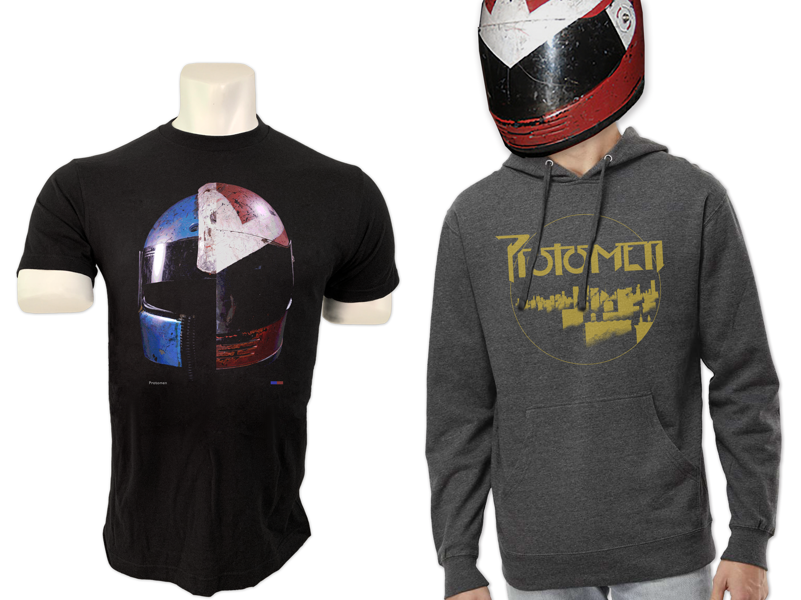
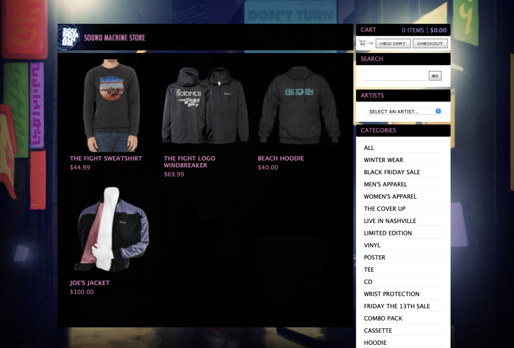
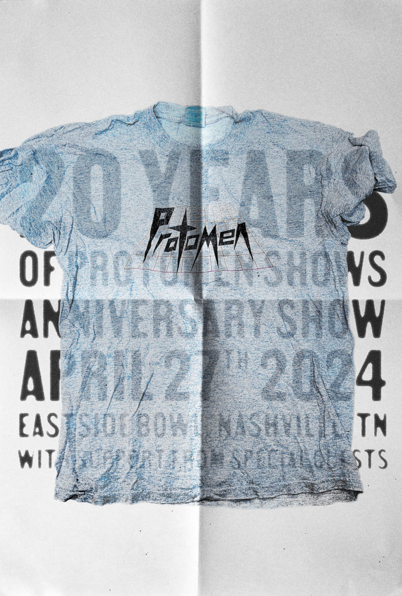

News
Black Friday Sale 2024
November 29th, 2024
The Protomen announce first, that their performance at MAGFest
and their 20th Anniversary show were "super extreme awesome".
They also announced that the new merch from their anniversary show
is now available on their online store as well as the
details
for the Black Friday to Cyborg Monday sale. This sale consists of
a 20% discount for every purchase made with the
code "TWENTY24"
at checkout.

Black Friday Sale 2023
November 23rd, 2023
The Protomen announce a 20% discount on all online orders
during the Black Friday to Cyborg Monday Period.
The code for
this discount is "TWENTY23".
They also announce that details for additional 20th Anniversary show tickets will be available soon.

20th Anniversary Show and MAGFest
November 1st, 2024
The Protomen announce that they will be celebrating their 20th anniversary of live performances with a
special show. It will occur on April 27th, 2024 with the location being Eastside Bowl-Nashville, TN.
Tickets are currently available for purchase at the time of writing.
